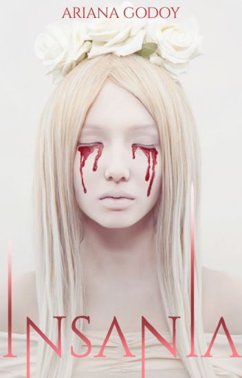
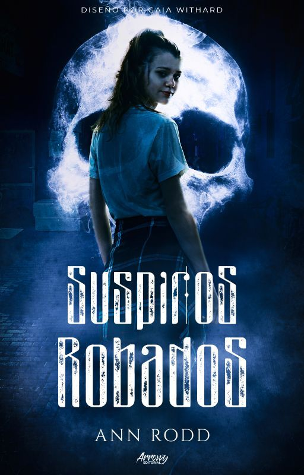
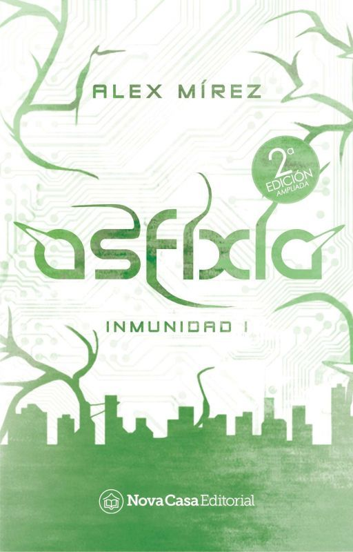
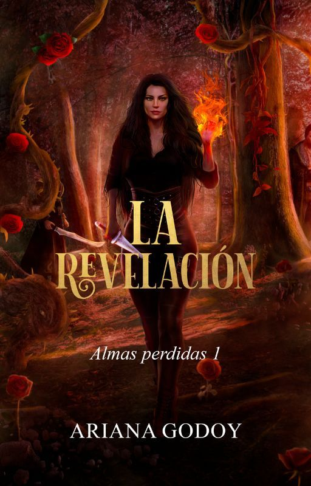
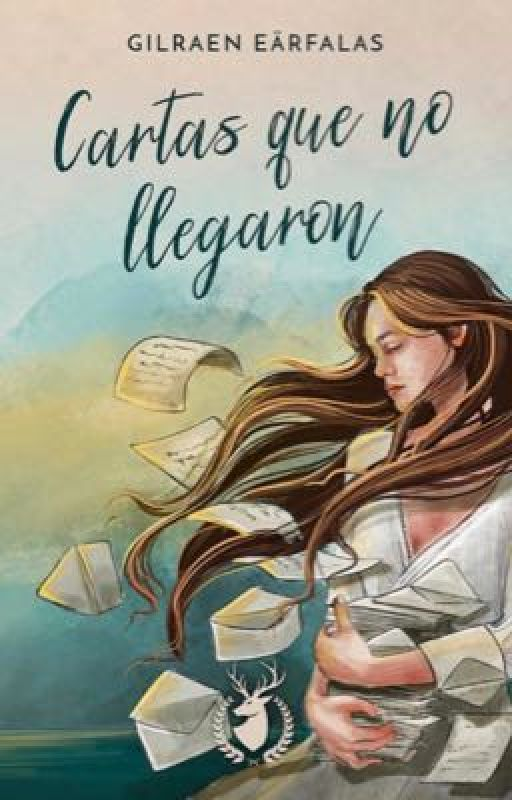
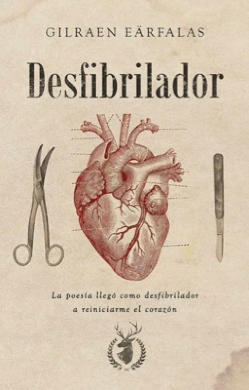

 INSANIA - ARIANA GODOY
Todos cargamos con un poco de locura dentro de nosotros. Y es esa irracionalidad la que lo alimenta, la que dibuja una sonrisa que muestra sus dientes afilados y listos para romper piel y destilar sangre. Él puede olfatear la locura en tu alma como un sabueso entrenado, hambriento de dolor, destiñendo decadencia y muerte. Shhh, no digas su nombre.
 SUSPIROS ROBADOS - ANN ROOD
Mientras sobrevive robando energía vital a otros, Serena, una joven estudiante, debe averiguar quién es su asesino antes de que él escoja una nueva víctima.
Serena ha sido asesinada. Todavía siente el frío del cuchillo en su pecho cuando la muerte se cierne sobre ella, esperando que su alma abandone su cuerpo. Pero Serena no puede, está atrapada.
La muerte decide, entonces, darle otra oportunidad: ella podrá vivir mientras robe la energía de humanos sanos. Si no, volverá a ser un cadáver con destino a pudrirse, atrapada en la tierra por siempre cuando ya no quedé más de su cuerpo.
Dividida entre su propia supervivencia y atacar a los humanos, planea la manera de sobrevivir alimentándose de los peores hombres y mujeres que pueda encontrar en las noches. Tal vez así, incluso pueda hallar a su asesino.
Sin embargo, cuando intenta volver a su vida normal, una nueva alumna en su instituto parece saber qué es ella y estar decidida a eliminarla. Serena tendrvá que poner en balanza todo lo que siempre creyó de sí misma y lo que queda ahora de su alma: sus sueños, sus esperanzas, el futuro, el chico que le gusta y la rebosante energía que posee y que la atrae aún más a él, su familia, amigos y su muerte; sobre todo, su muerte.
 ASFIXIA - ALEZ MIREZ
El primero de septiembre de 2019, sucedió. Parecía un día normal hasta que las personas comenzaron a asfixiarse de forma tortuosa e inexplicable.
Poco a poco, el mundo se sumió en un frío y pasmoso silencio.Y lo único que quedó fue el horroroso panorama de millones de cadáveres, los recuerdos de la vida humana...
El planeta entero se apagó. Ahí empezó todo. Comencé a viajar y con el pasar del tiempo descubrí que seis personas también habían sobrevivido. ¿Cómo? No lo sé, pero me les uní.Algunos se dedicaron a investigar lo que había sucedido, el porqué de la extinción del hombre, hasta que un día ellos también empezaron a morir. Así, en un parpadeo, el número de supervivientes se redujo a uno.
Mi nombre es Drey. Tengo dieciocho años y no he muerto. Tampoco sé por qué. Solo sé que ahora yo habito el mundo, que soy la única persona que queda en el planeta, la única voz entre una nada capaz de enloquecer. O al menos eso creía...
 LA REVELACIÓN - ARIANA GODOY
Ella es un vampiro convertido. Él es un vampiro purasangre. Ella aún se aferra a su humanidad, él es un asesino frío. Sus mundos son completamente diferentes, son enemigos naturales. ¿Qué pasará cuando sus caminos se crucen? ¿Y si para ella, él es la clave para descubrir la verdad?
EL CHIOCO DEL CORAZÓN ROTO - YAMILÉ SC
«¿Qué tan masoquista es estar enamorada de alguien que no quiere ser amado?»
Allison está enamorada de un chico que intenta olvidarse de Jules, su antiguo y único amor.
Allison está convencida de poder reparar el daño que ella le dejó, sin embargo, no es nada fácil reparar un corazón roto, pues en el camino podría romperse a sí misma.
EL CHICO DEL CORAZÓN FRIO - YAMILÉ SC
«Éramos la prueba viviente de que el amor es para siempre incluso en la peor tormenta.»
Jenell se muda para cursar la universidad mientras intenta soportar a Logan, un indescifrable y amargado chico.
Pero la vida tiene complicaciones por las que se verá en una amarga situación que la llevará a preguntarse por el pasado de sus padres. Después de todo, Logan podría estar relacionado con ella desde antes de lo que ella misma creía.
 CARTAS QUE NO LLEGARON - GILRAEN EARFALAS
«Cuando viste el potencial que tenía de convertirme en sol, quisiste convencerme de que era el cerillo más bonito que habías visto»
Ella era un alma libre, una sirena con ansias de conquistar los océanos. Él parecía el hombre perfecto, pero guardaba un secreto: quería convertirla en sardina y mantenerla cautiva en una pecera.
¿Cómo volver a nadar contracorriente, si la convencieron de que su vida debe ser tras los cristales?
¿Cómo volver a mirarse al espejo, si en el reflejo ya no se ve a sí misma?
Dime, ¿Cómo se encuentra el olvido? 365 cartas fueron la respuesta que Danny encontró para dejar atrás a Narciso.
 DESFIBRILADOR - GILRAEN EARFALAS
Cada quien vive sus propios tormentos.
Los míos me trajeron hasta donde estoy hoy, no sin antes intentar hundirme. La muerte me miró a los ojos una noche de febrero de 2010, recuerdo la sangre manar a borbotones de mis entrañas, me ahogaba, desaparecía. Tuve la fuerza para transformar aquel martirio. Comencé a escribir y, a pesar de que me quisieron silenciar, cada letra fue una compresión, cada poema, una arritmia salvada. Varias arritmias después, me condujeron a escribir este libro.
Desfibrilador es una cita con el médico. En estas páginas se traduce el dolor que se siente y no puede señalarse: heridas de abuso, abandono, soledad, desamor y despedidas. Si buscas un analgésico, no es este, pero si quieres puedo acompañarte hasta que pase el dolor.